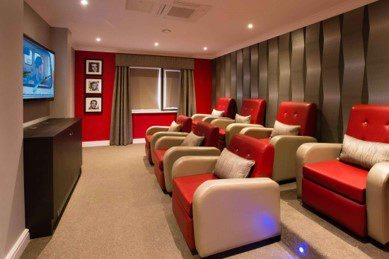
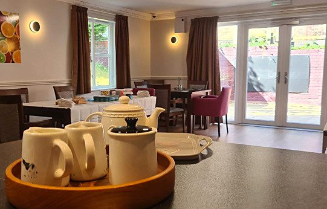

Your family becomes our family.A room they can truly call home.
Choosing specialist care for someone you love is a big decision. Here is what a placement with us looks like, how to arrange a visit, and how care is funded.
Settling inA room they can truly call home.With a personalised care plan reviewed and adapted as often as their needs change.
Living wellA day worth having.Therapy, activity and outings. The things that make a day worth having.
As needs changeCare that adapts.Person centred care that adapts as needs change, so support stays appropriate and meaningful.
StayingNo search to restart.Step down within our own services, or a home here for as long as needed.


Know the neighbourhood
What is round the corner.
Every service page names the real places nearby: churches, parks, walks, shops and stations. It is the question families ask first, and the answer helps you picture visiting.
St Matthews Parade, Northampton
The DallingtonsSt Mary the Virgin has stood three hundred yards away since 1207, with Dallington Park and Duston’s shops within a mile.
St Matthews HospitalSt Matthew’s Church is next door, with its Henry Moore Madonna and Child. Kingsley Park Terrace shops are two minutes away, and Abington Park and the Racecourse within a mile. St Matthews Unit is a few doors along the same parade.
Althorp GrangeSpratton village is about a mile away, with a Grade I listed Norman church, the village store and the King’s Head.
St Matthews UnitA church, a Methodist chapel and the Central Mosque are all within a quarter mile. St Matthews Hospital is a few doors along the same parade.
Kingsthorpe GrangeThe Brampton Valley Way, fourteen traffic free miles to Market Harborough, begins under a mile north.
The AvenueBradlaugh Fields, a hundred and fifty acre wildlife park, borders Spinney Hill, and the Spinney Hill pub and Morrisons are a few minutes away.
Willowbrook HouseCorby Hospital is close by, and Corby station runs direct to London St Pancras.
Maple Leaf HouseSt Anne’s Church is on the same avenue, with Sowe Valley walks nearby and Coombe Abbey a short drive.
Hawthorne HouseThe shops, Tile Hill Library and St Oswald’s Church are on the same street, and Tile Hill Wood, a nature reserve with paths surfaced for wheelchair users, is half a mile away.
The Moreton CentreCoast paths at Bulverhythe and Combe Haven, woodland at Marline Wood, and Alexandra Park, all within reach of a quiet seaside address.
Funding
How a placement is paid for.
Placements can be funded in different ways. Our team will talk you through how a placement is funded before anything is agreed.
NHS continuing healthcareCare arranged and funded by the NHS for adults whose needs are mainly health needs, following an assessment by the local integrated care board.
Section 117 aftercareAftercare for people who have been detained under certain sections of the Mental Health Act, arranged by the NHS and the local authority together.
Local authority fundingCare arranged by the council's adult social care team, following a care needs assessment and a financial assessment.
What families say
In their own words.
J looked well and bright, this is a marked improvement and the best we have seen him since he went into care. This is an improvement especially over the last 4 weeks.
A family of a resident at Willowbrook House
Staff are always helpful and caring. They let you know about how he has been doing and any concerns. The Manager & Nurse have the appropriate conversations and are genuinely caring and understanding. They go above & beyond. I have been impressed with the care they give to my dad.
A family review of Maple Leaf House, carehome.co.uk
Families and friends can share their experience independently at carehome.co.uk. Leave a review.